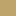
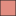
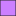

<!doctype html>
<html lang="en">
    <head>
        <meta charset="utf-8">
        <meta http-equiv="X-UA-Compatible" content="IE=edge">
        <meta name="viewport" content="initial-scale=1,user-scalable=no,maximum-scale=1,width=device-width">
        <meta name="mobile-web-app-capable" content="yes">
        <meta name="apple-mobile-web-app-capable" content="yes">
        <link rel="stylesheet" href="css/leaflet.css">
        <link rel="stylesheet" href="css/qgis2web.css"><link rel="stylesheet" href="css/fontawesome-all.min.css">
        <link rel="stylesheet" href="css/leaflet-search.css">
        <link rel="stylesheet" href="css/leaflet-control-geocoder.Geocoder.css">
        <style>
        #map {
            width: 1066px;
            height: 579px;
        }
        </style>
        <title></title>
    </head>
    <body>
        <div id="map">
        </div>
        <script src="js/qgis2web_expressions.js"></script>
        <script src="js/leaflet.js"></script>
        <script src="js/leaflet.rotatedMarker.js"></script>
        <script src="js/leaflet.pattern.js"></script>
        <script src="js/leaflet-hash.js"></script>
        <script src="js/Autolinker.min.js"></script>
        <script src="js/rbush.min.js"></script>
        <script src="js/labelgun.min.js"></script>
        <script src="js/labels.js"></script>
        <script src="js/leaflet.wms.js"></script>
        <script src="js/leaflet-control-geocoder.Geocoder.js"></script>
        <script src="js/leaflet-search.js"></script>
        <script src="data/T06_Provincias_1.js"></script>
        <script src="data/LICAragn_2.js"></script>
        <script src="data/PORNAragn_3.js"></script>
        <script src="data/T05_Aragon_4.js"></script>
        <script>
        var map = L.map('map', {
            zoomControl:true, maxZoom:15, minZoom:1
        }).fitBounds([[36.9238786687721,-8.5080637112665],[44.25122401566174,8.881432141197442]]);
        var hash = new L.Hash(map);
        map.attributionControl.setPrefix('<a href="https://github.com/tomchadwin/qgis2web" target="_blank">qgis2web</a> &middot; <a href="http://leafletjs.com" title="A JS library for interactive maps">Leaflet</a>');
        var bounds_group = new L.featureGroup([]);
        function setBounds() {
        }
        var layer_OrtoimagenPNOAMximaactualidad_0 = L.WMS.layer("http://www.ign.es/wms-inspire/pnoa-ma", "OI.OrthoimageCoverage", {
            format: 'image/png',
            uppercase: true,
            transparent: true,
            continuousWorld : true,
            tiled: true,
            info_format: 'text/html',
            opacity: 1,
            identify: false,
            attribution: '',
        });
        map.addLayer(layer_OrtoimagenPNOAMximaactualidad_0);
        function pop_T06_Provincias_1(feature, layer) {
            var popupContent = '<table>\
                    <tr>\
                        <td colspan="2">' + (feature.properties['PROVINCIA'] !== null ? Autolinker.link(String(feature.properties['PROVINCIA'])) : '') + '</td>\
                    </tr>\
                    <tr>\
                        <td colspan="2">' + (feature.properties['SUM_SUP_OF'] !== null ? Autolinker.link(String(feature.properties['SUM_SUP_OF'])) : '') + '</td>\
                    </tr>\
                </table>';
            layer.bindPopup(popupContent, {maxHeight: 400});
        }

        function style_T06_Provincias_1_0(feature) {
            switch(String(feature.properties['PROVINCIA'])) {
                case 'Huesca':
                    return {
                pane: 'pane_T06_Provincias_1',
                opacity: 1,
                color: 'rgba(35,35,35,1.0)',
                dashArray: '',
                lineCap: 'butt',
                lineJoin: 'miter',
                weight: 1.0, 
                fill: true,
                fillOpacity: 1,
                fillColor: 'rgba(226,141,129,1.0)',
            }
                    break;
                case 'Teruel':
                    return {
                pane: 'pane_T06_Provincias_1',
                opacity: 1,
                color: 'rgba(35,35,35,1.0)',
                dashArray: '',
                lineCap: 'butt',
                lineJoin: 'miter',
                weight: 1.0, 
                fill: true,
                fillOpacity: 1,
                fillColor: 'rgba(149,221,81,1.0)',
            }
                    break;
                case 'Zaragoza':
                    return {
                pane: 'pane_T06_Provincias_1',
                opacity: 1,
                color: 'rgba(35,35,35,1.0)',
                dashArray: '',
                lineCap: 'butt',
                lineJoin: 'miter',
                weight: 1.0, 
                fill: true,
                fillOpacity: 1,
                fillColor: 'rgba(204,127,255,1.0)',
            }
                    break;
            }
        }
        map.createPane('pane_T06_Provincias_1');
        map.getPane('pane_T06_Provincias_1').style.zIndex = 401;
        map.getPane('pane_T06_Provincias_1').style['mix-blend-mode'] = 'normal';
        var layer_T06_Provincias_1 = new L.geoJson(json_T06_Provincias_1, {
            attribution: '',
            pane: 'pane_T06_Provincias_1',
            onEachFeature: pop_T06_Provincias_1,
            style: style_T06_Provincias_1_0,
        });
        bounds_group.addLayer(layer_T06_Provincias_1);
        map.addLayer(layer_T06_Provincias_1);
        function pop_LICAragn_2(feature, layer) {
            var popupContent = '<table>\
                    <tr>\
                        <td colspan="2">' + (feature.properties['CODIGO'] !== null ? Autolinker.link(String(feature.properties['CODIGO'])) : '') + '</td>\
                    </tr>\
                    <tr>\
                        <td colspan="2">' + (feature.properties['Nombre'] !== null ? Autolinker.link(String(feature.properties['Nombre'])) : '') + '</td>\
                    </tr>\
                    <tr>\
                        <td colspan="2">' + (feature.properties['FECHA_DES'] !== null ? Autolinker.link(String(feature.properties['FECHA_DES'])) : '') + '</td>\
                    </tr>\
                    <tr>\
                        <td colspan="2">' + (feature.properties['SUPERFICIE'] !== null ? Autolinker.link(String(feature.properties['SUPERFICIE'])) : '') + '</td>\
                    </tr>\
                    <tr>\
                        <td colspan="2">' + (feature.properties['PERÍMETRO'] !== null ? Autolinker.link(String(feature.properties['PERÍMETRO'])) : '') + '</td>\
                    </tr>\
                    <tr>\
                        <td colspan="2">' + (feature.properties['Shape_Leng'] !== null ? Autolinker.link(String(feature.properties['Shape_Leng'])) : '') + '</td>\
                    </tr>\
                    <tr>\
                        <td colspan="2">' + (feature.properties['Shape_Area'] !== null ? Autolinker.link(String(feature.properties['Shape_Area'])) : '') + '</td>\
                    </tr>\
                    <tr>\
                        <td colspan="2">' + (feature.properties['CLAVE'] !== null ? Autolinker.link(String(feature.properties['CLAVE'])) : '') + '</td>\
                    </tr>\
                    <tr>\
                        <td colspan="2">' + (feature.properties['NEAR_FID'] !== null ? Autolinker.link(String(feature.properties['NEAR_FID'])) : '') + '</td>\
                    </tr>\
                    <tr>\
                        <td colspan="2">' + (feature.properties['NEAR_DIST'] !== null ? Autolinker.link(String(feature.properties['NEAR_DIST'])) : '') + '</td>\
                    </tr>\
                    <tr>\
                        <td colspan="2">' + (feature.properties['NEAR_X'] !== null ? Autolinker.link(String(feature.properties['NEAR_X'])) : '') + '</td>\
                    </tr>\
                    <tr>\
                        <td colspan="2">' + (feature.properties['NEAR_Y'] !== null ? Autolinker.link(String(feature.properties['NEAR_Y'])) : '') + '</td>\
                    </tr>\
                </table>';
            layer.bindPopup(popupContent, {maxHeight: 400});
        }

        function style_LICAragn_2_0() {
            return {
                pane: 'pane_LICAragn_2',
                stroke: false, 
                fill: true,
                fillOpacity: 1,
                fillColor: 'rgba(178,223,138,1.0)',
            }
        }
        map.createPane('pane_LICAragn_2');
        map.getPane('pane_LICAragn_2').style.zIndex = 402;
        map.getPane('pane_LICAragn_2').style['mix-blend-mode'] = 'normal';
        var layer_LICAragn_2 = new L.geoJson(json_LICAragn_2, {
            attribution: '',
            pane: 'pane_LICAragn_2',
            onEachFeature: pop_LICAragn_2,
            style: style_LICAragn_2_0,
        });
        bounds_group.addLayer(layer_LICAragn_2);
        map.addLayer(layer_LICAragn_2);
        function pop_PORNAragn_3(feature, layer) {
            var popupContent = '<table>\
                    <tr>\
                        <td colspan="2">' + (feature.properties['OBJECTID'] !== null ? Autolinker.link(String(feature.properties['OBJECTID'])) : '') + '</td>\
                    </tr>\
                    <tr>\
                        <td colspan="2">' + (feature.properties['CODIGO'] !== null ? Autolinker.link(String(feature.properties['CODIGO'])) : '') + '</td>\
                    </tr>\
                    <tr>\
                        <td colspan="2">' + (feature.properties['RECINTO'] !== null ? Autolinker.link(String(feature.properties['RECINTO'])) : '') + '</td>\
                    </tr>\
                    <tr>\
                        <td colspan="2">' + (feature.properties['DESCRIPCIO'] !== null ? Autolinker.link(String(feature.properties['DESCRIPCIO'])) : '') + '</td>\
                    </tr>\
                    <tr>\
                        <td colspan="2">' + (feature.properties['CTIPFIGURA'] !== null ? Autolinker.link(String(feature.properties['CTIPFIGURA'])) : '') + '</td>\
                    </tr>\
                    <tr>\
                        <td colspan="2">' + (feature.properties['CESTADO'] !== null ? Autolinker.link(String(feature.properties['CESTADO'])) : '') + '</td>\
                    </tr>\
                    <tr>\
                        <td colspan="2">' + (feature.properties['COORD_X'] !== null ? Autolinker.link(String(feature.properties['COORD_X'])) : '') + '</td>\
                    </tr>\
                    <tr>\
                        <td colspan="2">' + (feature.properties['COORD_Y'] !== null ? Autolinker.link(String(feature.properties['COORD_Y'])) : '') + '</td>\
                    </tr>\
                    <tr>\
                        <td colspan="2">' + (feature.properties['SHAPE_AREA'] !== null ? Autolinker.link(String(feature.properties['SHAPE_AREA'])) : '') + '</td>\
                    </tr>\
                    <tr>\
                        <td colspan="2">' + (feature.properties['SHAPE_LEN'] !== null ? Autolinker.link(String(feature.properties['SHAPE_LEN'])) : '') + '</td>\
                    </tr>\
                </table>';
            layer.bindPopup(popupContent, {maxHeight: 400});
        }

        function style_PORNAragn_3_0() {
            return {
                pane: 'pane_PORNAragn_3',
                stroke: false, 
                fill: true,
                fillOpacity: 1,
                fillColor: 'rgba(190,164,106,1.0)',
            }
        }
        map.createPane('pane_PORNAragn_3');
        map.getPane('pane_PORNAragn_3').style.zIndex = 403;
        map.getPane('pane_PORNAragn_3').style['mix-blend-mode'] = 'normal';
        var layer_PORNAragn_3 = new L.geoJson(json_PORNAragn_3, {
            attribution: '',
            pane: 'pane_PORNAragn_3',
            onEachFeature: pop_PORNAragn_3,
            style: style_PORNAragn_3_0,
        });
        bounds_group.addLayer(layer_PORNAragn_3);
        map.addLayer(layer_PORNAragn_3);
        function pop_T05_Aragon_4(feature, layer) {
            var popupContent = '<table>\
                    <tr>\
                        <td colspan="2">' + (feature.properties['COMUNIDAD'] !== null ? Autolinker.link(String(feature.properties['COMUNIDAD'])) : '') + '</td>\
                    </tr>\
                    <tr>\
                        <td colspan="2">' + (feature.properties['SUM_SUP_OF'] !== null ? Autolinker.link(String(feature.properties['SUM_SUP_OF'])) : '') + '</td>\
                    </tr>\
                </table>';
            layer.bindPopup(popupContent, {maxHeight: 400});
        }

        function style_T05_Aragon_4_0() {
            return {
                pane: 'pane_T05_Aragon_4',
                opacity: 1,
                color: 'rgba(227,26,28,1.0)',
                dashArray: '',
                lineCap: 'butt',
                lineJoin: 'miter',
                weight: 1.0, 
                fill: true,
                fillOpacity: 1,
                fillColor: 'rgba(145,82,45,0.0)',
            }
        }
        map.createPane('pane_T05_Aragon_4');
        map.getPane('pane_T05_Aragon_4').style.zIndex = 404;
        map.getPane('pane_T05_Aragon_4').style['mix-blend-mode'] = 'normal';
        var layer_T05_Aragon_4 = new L.geoJson(json_T05_Aragon_4, {
            attribution: '',
            pane: 'pane_T05_Aragon_4',
            onEachFeature: pop_T05_Aragon_4,
            style: style_T05_Aragon_4_0,
        });
        bounds_group.addLayer(layer_T05_Aragon_4);
        map.addLayer(layer_T05_Aragon_4);
        var osmGeocoder = new L.Control.Geocoder({
            collapsed: true,
            position: 'topleft',
            text: 'Search',
            title: 'Testing'
        }).addTo(map);
        document.getElementsByClassName('leaflet-control-geocoder-icon')[0]
        .className += ' fa fa-search';
        document.getElementsByClassName('leaflet-control-geocoder-icon')[0]
        .title += 'Search for a place';
        var baseMaps = {};
        L.control.layers(baseMaps,{' T05_Aragon': layer_T05_Aragon_4,' PORN Aragón': layer_PORNAragn_3,' LIC Aragón': layer_LICAragn_2,'T06_Provincias<br /><table><tr><td style="text-align: center;"></td><td>Huesca</td></tr><tr><td style="text-align: center;"></td><td>Teruel</td></tr><tr><td style="text-align: center;"></td><td>Zaragoza</td></tr></table>': layer_T06_Provincias_1,"Ortoimagen PNOA Máxima actualidad": layer_OrtoimagenPNOAMximaactualidad_0,}).addTo(map);
        setBounds();
        map.addControl(new L.Control.Search({
            layer: layer_LICAragn_2,
            initial: false,
            hideMarkerOnCollapse: true,
            propertyName: 'Nombre'}));
        document.getElementsByClassName('search-button')[0].className +=
         ' fa fa-binoculars';
        </script>
    </body>
</html>
